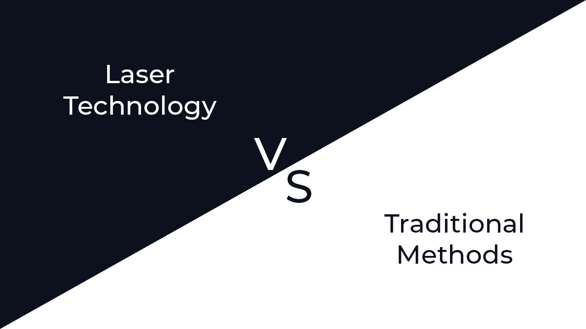
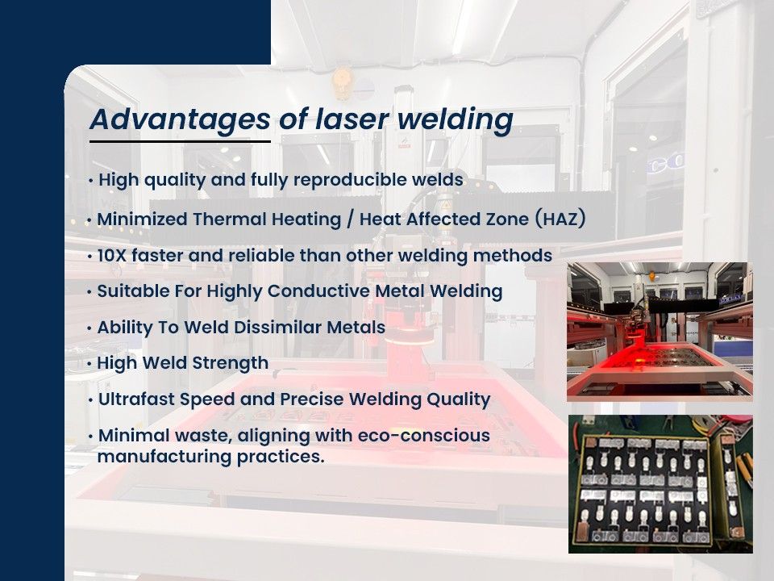
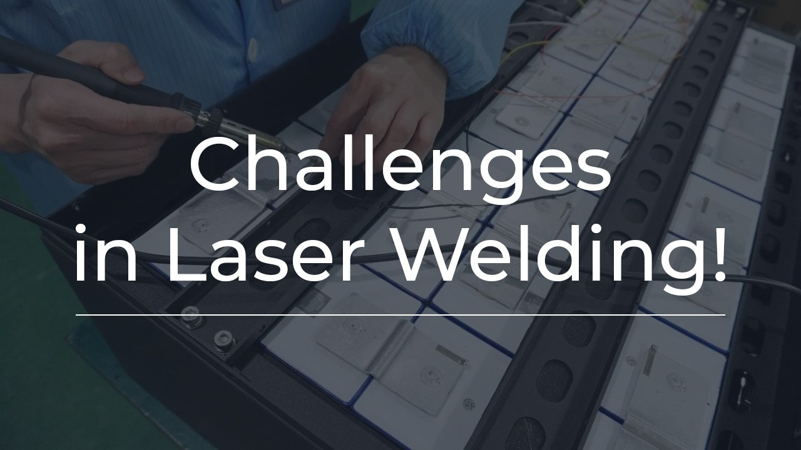
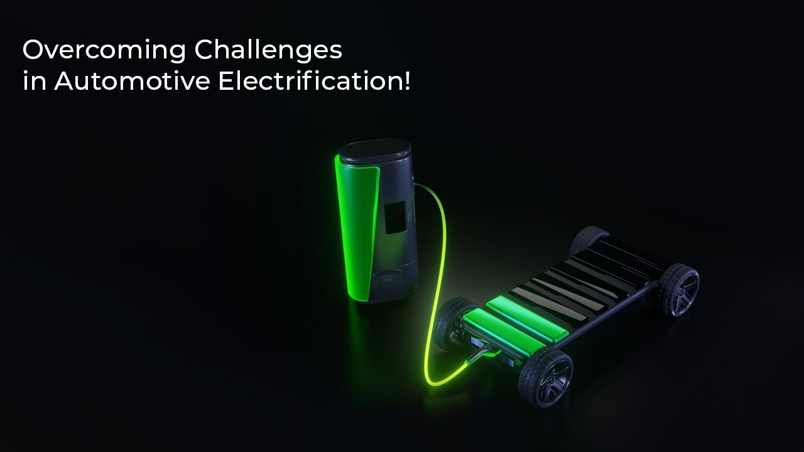
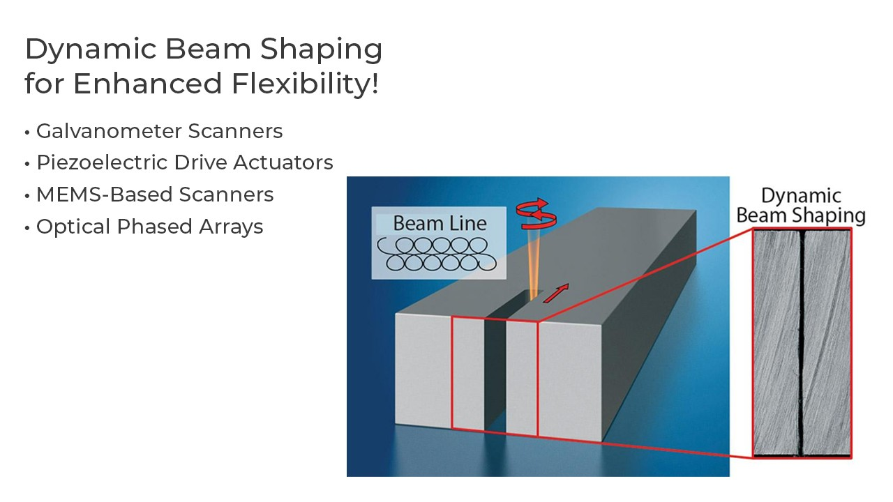

Introduction
The automotive industry is undergoing a seismic shift towards electrification. This transformation not only changes the way vehicles are powered but also redefines the manufacturing processes and materials required for building them. From the inception of power battery technology to the expansion of additive metal manufacturing and innovative cooling systems, automakers are constantly seeking advanced tools to meet their evolving needs. Laser technology, with its remarkable precision and efficiency, has emerged as a cornerstone in this journey, replacing traditional manufacturing processes.
Laser Technology vs. Traditional Methods

Compared to conventional manufacturing technologies, laser technology offers several distinct advantages. The concentrated, high-energy beam of a laser requires less heat input, making it an ideal choice for precision manufacturing. Laser welding, in particular, minimizes the risk of deformation while maximizing productivity.
Laser Welding's "Keyhole" Advantage

In the realm of welding, all methods involve creating a molten pool followed by rapid solidification, altering the welded metal's properties and microstructure. However, laser welding stands out due to its high-energy nature, capable of not just melting but also evaporating material. This evaporation during the welding process forms what is known as the "keyhole," resulting in a high aspect ratio - a significant depth-to-width ratio of melt penetration. This keyhole advantage helps reduce part deformation, making it suitable for high-precision welding.
Challenges in Laser Welding

Despite its benefits, laser welding presents unique challenges, particularly in the automotive industry. The stability of small holes, formed due to material evaporation, is crucial for achieving high-quality welds. When welding materials like steel and nickel, these small holes remain stable, ensuring excellent welding results. However, when working with copper, aluminum, or high-alloy materials, the stability of these small holes may become a concern, leading to irregular issues such as pores and splashes, ultimately affecting welding quality.
Overcoming Challenges in Automotive Electrification

Automakers committed to product electrification are increasingly turning to laser-based material processing tools for welding, cutting, composites, and complex product processing. As laser power continues to rise, the industry faces the challenge of maintaining the stability of the keyhole and welded joint microstructure. Achieving this stability demands precise control over laser process parameters, including wavelength, pulse energy, pulse duration, repetition rate, and feed rate, as well as laser beam spot size, shape, size, and intensity.
Dynamic Beam Shaping for Enhanced Flexibility

To improve and ensure welding quality, dynamic beam shaping techniques have come to the forefront. Dynamic beam shaping is essential for adapting to the frequently changing requirements of the automotive electrification industry. This technology involves galvanometer scanners, piezoelectric drive galvanometers, micro-electromechanical systems (MEMS) scanners, or optical phased arrays to manipulate the laser beam's shape effectively.
Galvanometer Scanners: Galvanometer scanners are widely used in industrial settings. They can oscillate the output of a single-mode fiber laser into various shapes, offering flexibility in welding and cutting tasks.
Piezoelectric Drive Actuators: These actuators provide precise control over the galvanometer scanner, moving the focal length of the laser beam. This technology is transitioning from research to practical industrial applications.
MEMS-Based Scanners: MEMS-based scanners offer dynamic beam shaping for low-power applications but face challenges in high-power welding.
Optical Phased Arrays: Optical phased arrays allow coherent beam combination, enabling the manipulation of laser beam shape for dynamic applications, including welding and cutting.
Conclusion
The advent of automotive electrification has reshaped the manufacturing landscape, demanding precision, efficiency, and adaptability. Laser technology, with its unique advantages and dynamic beam-shaping capabilities, has emerged as a critical enabler of this transformation. As the automotive industry continues to embrace electrification, laser-based material processing tools will play an increasingly vital role in shaping the future of precision manufacturing.